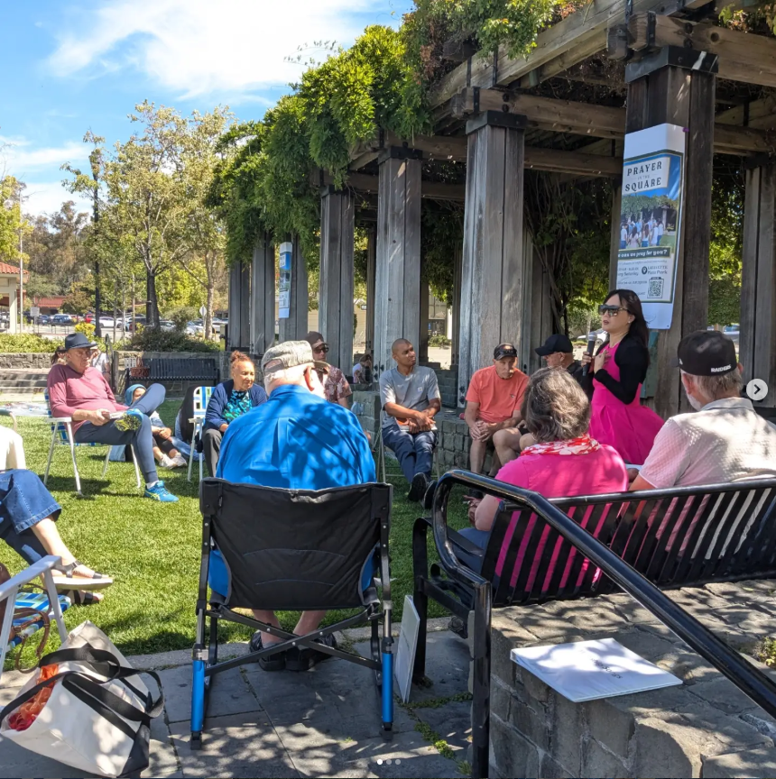
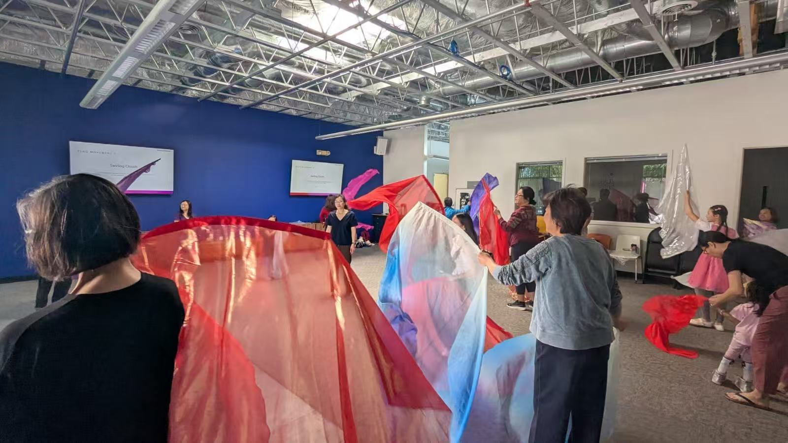
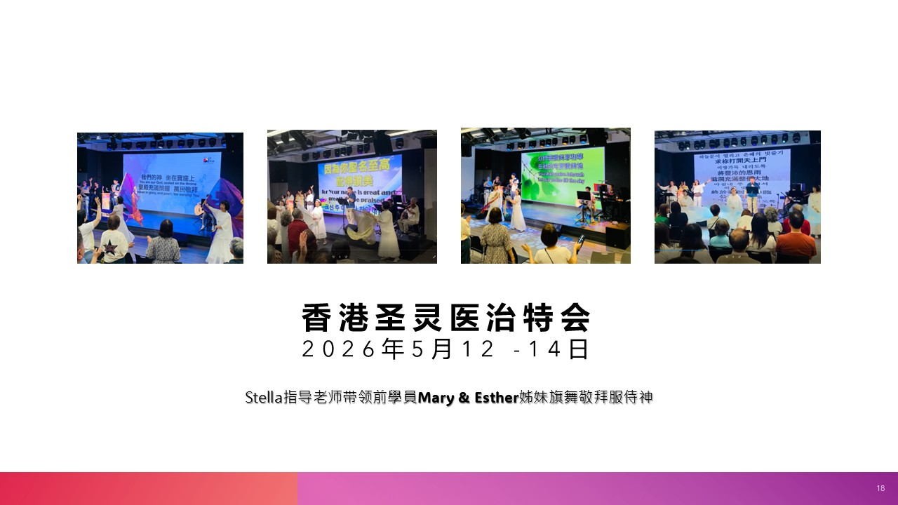
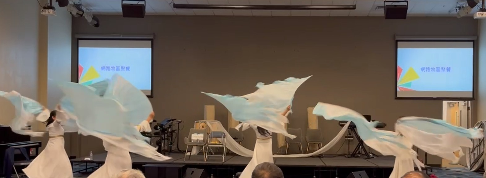
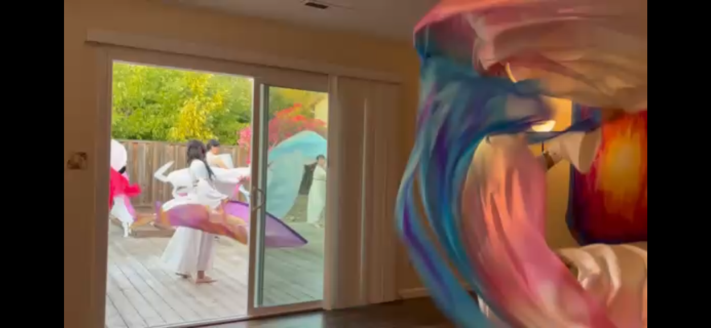

July 2026 · Portland
Bread of Life Church 波特兰灵粮堂
Worship flag dance ministering with the congregation at Bread of Life Church in Portland.
Worship flag dance ministering with the congregation at Bread of Life Church in Portland.
Raising flags of praise and interceding for the city in the public square of Lafayette.

A flag worship dance workshop equipping believers at New Vine Community Church in Mountain View.

Celebrating Pentecost with flowing flags, movement, and heartfelt worship at First Presbyterian Church of Alameda.
Ministering in worship flag dance at the Holy Spirit Healing Conference in Hong Kong.

Sharing the joy of the Lord through worship flag dance at Portland's Chinese Spring Festival celebration.
A time of worship, rest, and renewal as the Wings of Shalom family gathered together to seek God's presence.


Would you like our dancers to minister at your church, conference, or event? We'd be honored to lift a banner of praise with you.
Contact Us